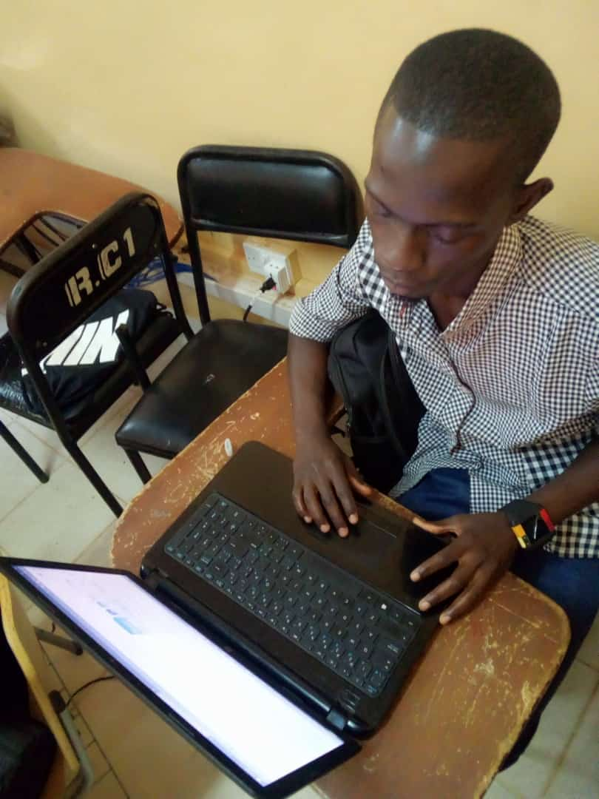

Contact


"Welcome to my portfolio! I'm excited to share my work, skills, and experiences with you."
Hi, I'm Baboucarr Sallah, a passionate student about software development and problem-solving. I want to specialize in building responsive and user-friendly applications using modern technologies like JavaScript, React, and Python. I love turning ideas into reality through code and am always eager to learn and collaborate on exciting projects.
I am Baboucarr Sallah, a dedicated and results-driven prospective software developer with some background in web and application development. Currently pursuing a degree in Computer Science, and I have some years of hands-on experience From my study at Management Development Institute (MDI) while doing my diploma in Computer. I have worked on various projects ranging from small business websites to large-scale enterprise applications. My journey in technology started with a passion for problem-solving and has grown into a deep appreciation for building efficient and scalable digital solutions.
I have expertise in front-end and back-end development, working with technologies such as
I focus on writing clean, maintainable code and following best practices in software development. I also enjoy collaborating with teams to develop user-friendly applications that enhance user experiences
Beyond coding, I am passionate about continuous learning and keeping up with the latest trends in technology. In my free time, I explore artificial intelligence, automation, and cybersecurity. Outside of tech, I love Football, playing video games, and traveling.